Chapter 21, the atlas, as built
Our systems atlas, Who Do They Answer To?, now sits inside our website, under the site’s masthead with a title bar of its own. The application kit draws its four kinds of page from the atlas model alone, and the atlas test holds every page to the model before it ships. This page shows what was built. It asks you for no decision; the review, the creative director’s wall test and the keyboard walks come in chat 12, and the choices go to Phase 4 board 1.
The atlas home
The whole system drawn as eight parts with a count on every flow, and the question “Why can the same care produce different bills?” pressed, which lights the three parts it reaches.

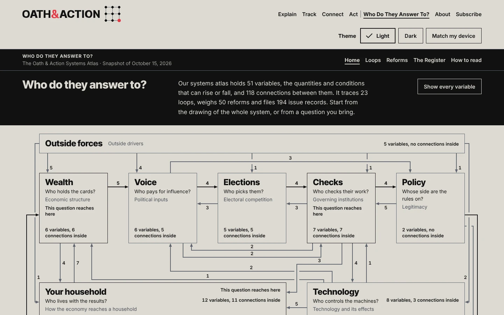

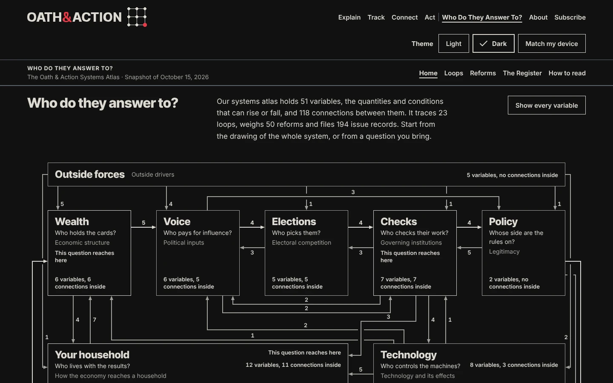

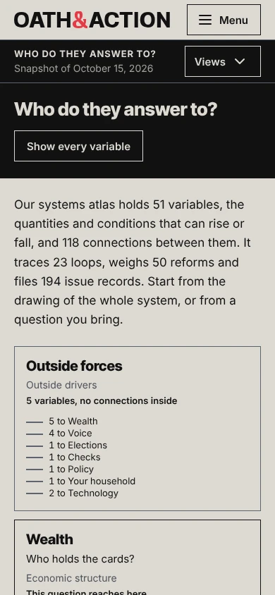

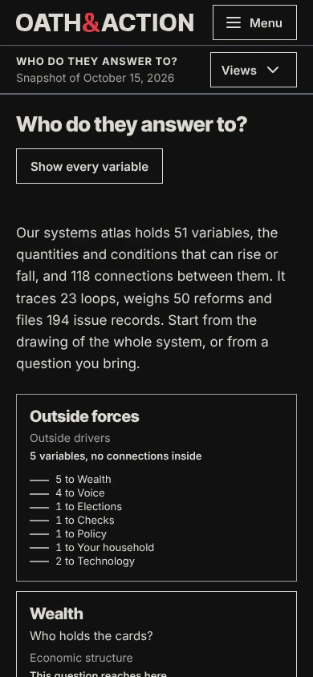
Rule 05.1 by screen, light theme (contract C5)
| Width | Screen | Newsprint | Red | Inside the limits |
|---|---|---|---|---|
| 1440 px | first | 71.1 | 0.0 | Yes |
| 1440 px | System | 76.3 | 0.0 | Yes |
| 1440 px | Questions | 81.4 | 0.0 | Yes |
| 1440 px | Footer | 81.7 | 0.0 | Yes |
| 390 px | first | 69.5 | 0.1 | Yes |
| 390 px | System | 76.5 | 0.0 | Yes |
| 390 px | Questions | 79.6 | 0.0 | Yes |
| 390 px | Footer | 80.0 | 0.0 | Yes |
Reform R-23
A minimum wage that rises with an index: its two targets in red, the other reforms at the same mark in ink, its two grades apart, its four effects one to a row, and its routes with their check dates.

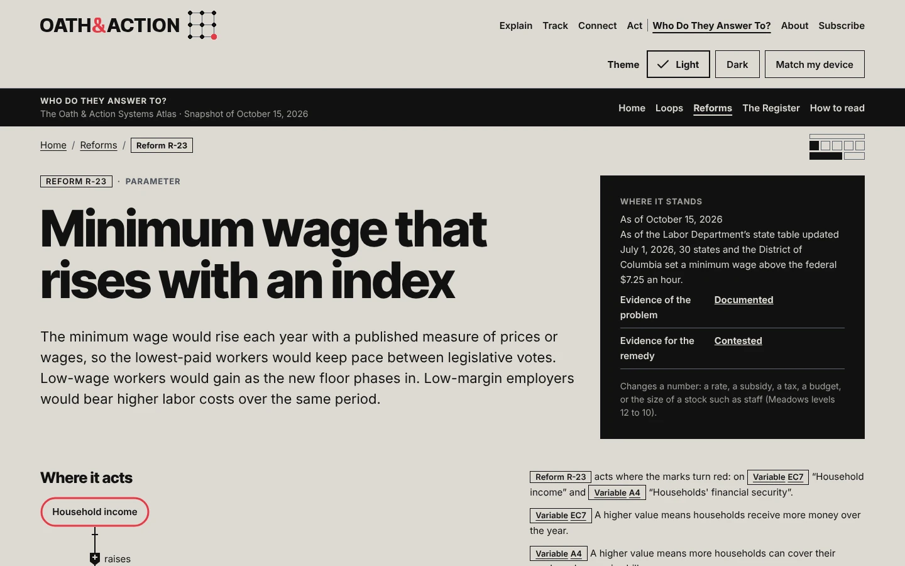

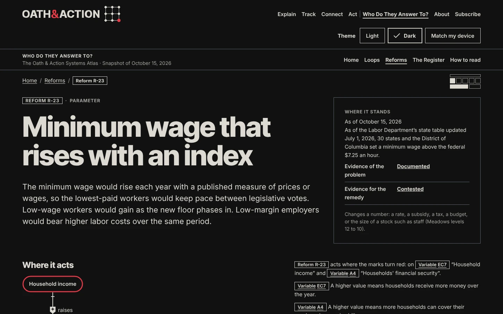

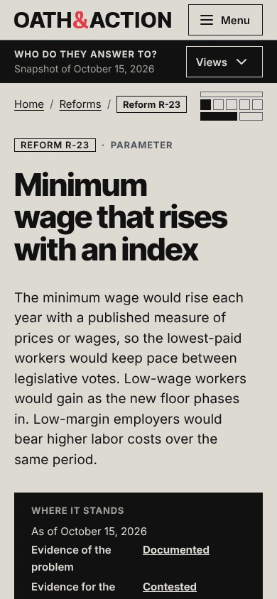

Rule 05.1 by screen, light theme (contract C5)
| Width | Screen | Newsprint | Red | Inside the limits |
|---|---|---|---|---|
| 1440 px | first | 72.5 | 0.1 | Yes |
| 1440 px | Reform | 74.8 | 0.1 | Yes |
| 1440 px | Grades | 67.9 | 0.0 | Yes |
| 1440 px | Effects | 69.2 | 0.0 | Yes |
| 1440 px | Routes | 85.0 | 0.0 | Yes |
| 1440 px | Sources | 82.4 | 0.0 | Yes |
| 1440 px | Footer | 82.4 | 0.0 | Yes |
| 390 px | first | 65.7 | 0.1 | Yes |
| 390 px | Reform | 69.0 | 0.0 | Yes |
| 390 px | Grades | 76.3 | 0.0 | Yes |
| 390 px | Effects | 66.2 | 0.0 | Yes |
| 390 px | Routes | 81.0 | 0.0 | Yes |
| 390 px | Sources | 80.4 | 0.0 | Yes |
| 390 px | Footer | 80.4 | 0.0 | Yes |
The Register, sheet D04
The index of twelve sheets with each grade counted in words, then sheet D04 open: its ten connections one to a row, the rejected option, and its issue records filtered to Variable D4.

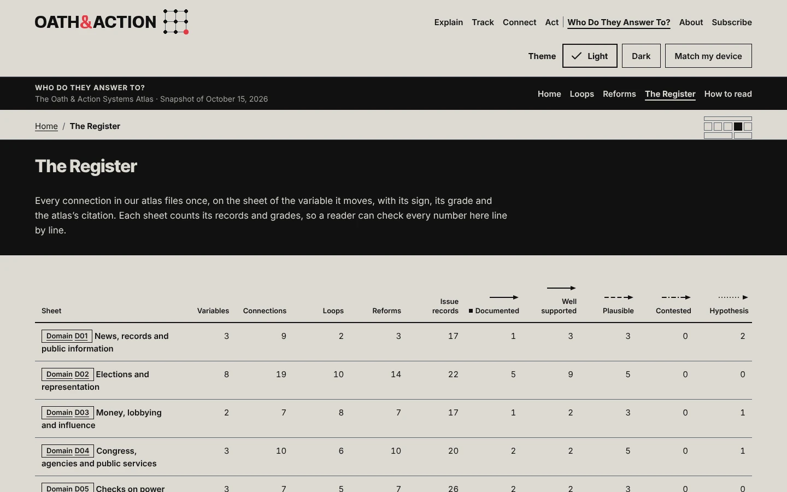

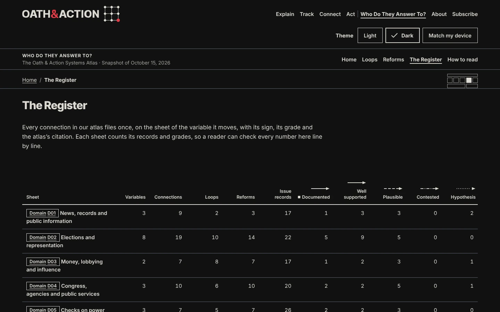

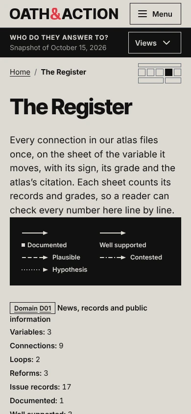

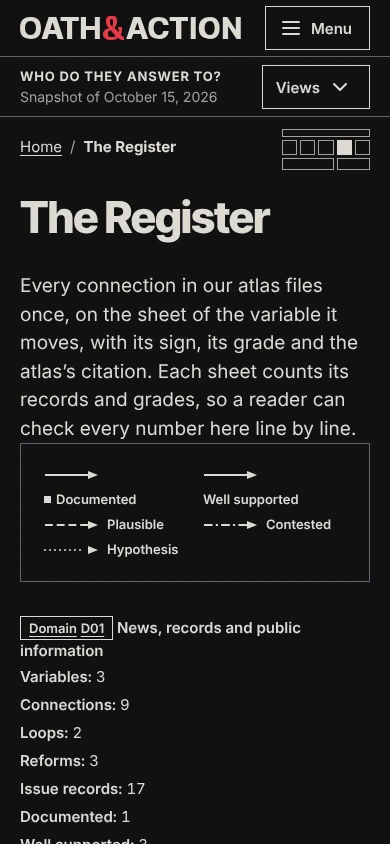
Rule 05.1 by screen, light theme (contract C5)
| Width | Screen | Newsprint | Red | Inside the limits |
|---|---|---|---|---|
| 1440 px | first | 67.0 | 0.0 | Yes |
| 1440 px | Index | 73.5 | 0.0 | Yes |
| 1440 px | Sheet | 78.7 | 0.0 | Yes |
| 1440 px | Rejected | 83.3 | 0.0 | Yes |
| 1440 px | Records | 82.1 | 0.0 | Yes |
| 1440 px | Footer | 81.1 | 0.0 | Yes |
| 390 px | first | 69.8 | 0.1 | Yes |
| 390 px | Index | 76.8 | 0.0 | Yes |
| 390 px | Sheet | 70.1 | 0.0 | Yes |
| 390 px | Rejected | 75.1 | 0.0 | Yes |
| 390 px | Records | 76.1 | 0.0 | Yes |
| 390 px | Footer | 80.1 | 0.0 | Yes |
Loop R18
Weakening watchdogs: the grade line, the signs read aloud, the two-step drawing with its weakest step, the stepper, and Reform R-11 chosen, with its three targets in red.

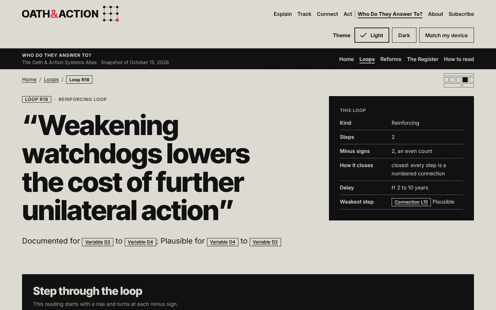

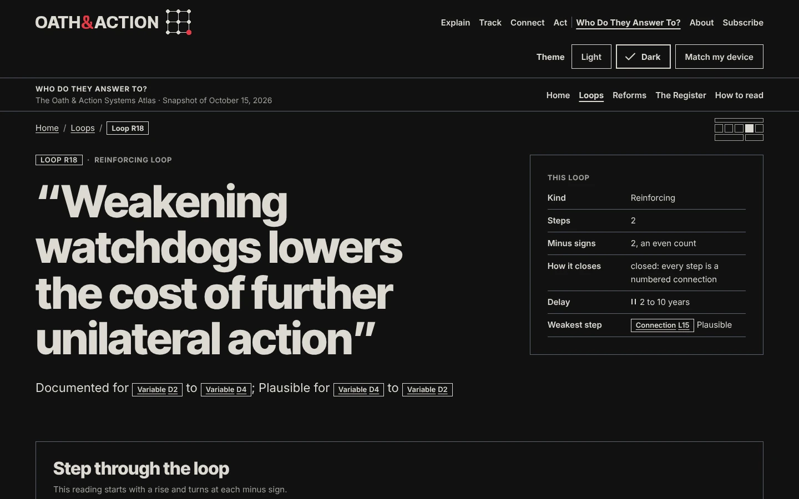

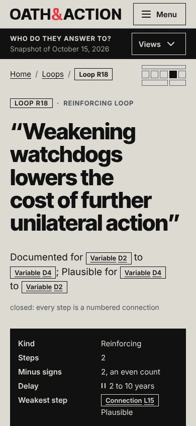

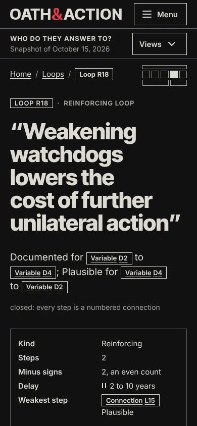
Rule 05.1 by screen, light theme (contract C5)
| Width | Screen | Newsprint | Red | Inside the limits |
|---|---|---|---|---|
| 1440 px | first | 64.1 | 0.0 | Yes |
| 1440 px | Loop | 66.8 | 0.2 | Yes |
| 1440 px | Stepper | 80.9 | 0.2 | Yes |
| 1440 px | Record | 83.4 | 0.0 | Yes |
| 1440 px | Evidence | 78.9 | 0.0 | Yes |
| 1440 px | Footer | 70.4 | 0.0 | Yes |
| 390 px | first | 61.4 | 0.1 | Yes |
| 390 px | Loop | 61.9 | 0.0 | Yes |
| 390 px | Stepper | 76.7 | 0.7 | Yes |
| 390 px | Record | 72.6 | 0.0 | Yes |
| 390 px | Evidence | 84.2 | 0.0 | Yes |
| 390 px | Footer | 80.6 | 0.0 | Yes |
The loop index and How to read

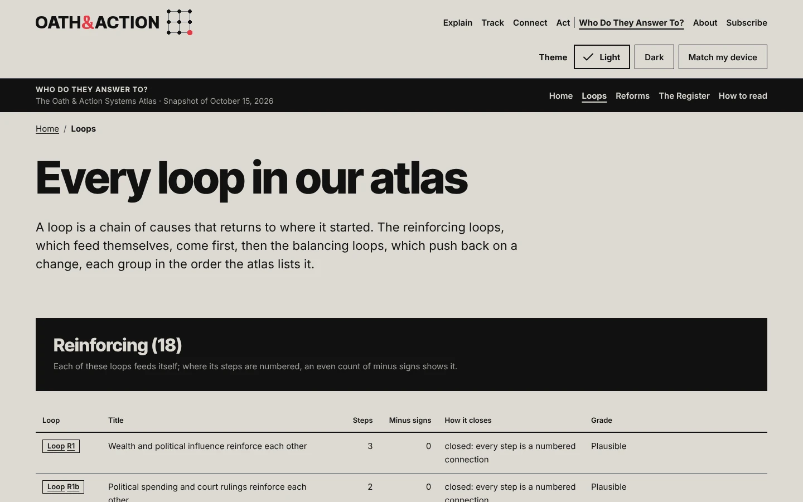

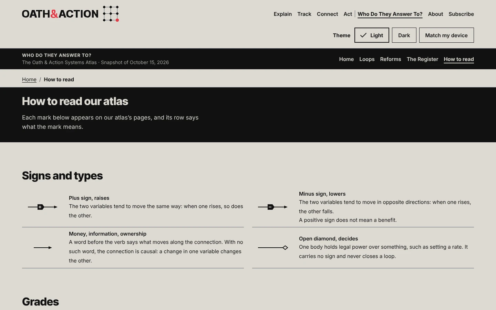
The atlas test
One script reads every atlas page the kit draws, as its standalone page and as each plate’s frames, together with the model, and checks that each page says what the model holds. Any failure stops the kit’s build and the strict guide build. Its self-test plants one fault for each check in a copy of a page, never in the model, and passes only when every plant is caught. Run 2026-11-23 00:32 UTC.
| Check | A11 | A12 | A13 | A14 | A15 | A16 | A17 | A18 | A19 | A20 |
|---|---|---|---|---|---|---|---|---|---|---|
| T1 typed ids | 15 | 12 | 14 | 15 | 6 | 5 | 2 | 4 | 4 | 2 |
| T2 connection marks | 15 | 12 | 14 | 15 | 6 | 5 | 2 | 4 | 4 | 2 |
| T3 counts | 15 | 12 | 14 | 15 | 6 | 5 | 2 | 4 | 4 | 2 |
| T4 loops | 15 | 12 | 14 | 15 | 6 | 5 | 2 | 4 | 4 | 2 |
| T5 authority | 15 | 12 | 14 | 15 | 6 | 5 | 2 | 4 | 4 | 2 |
| T6 red | 15 | 12 | 14 | 15 | 6 | 5 | 2 | 4 | 4 | 2 |
| T7 effects | 15 | 12 | 14 | 15 | 6 | 5 | 2 | 4 | 4 | 2 |
| T8 routes and dates | 15 | 12 | 14 | 15 | 6 | 5 | 2 | 4 | 4 | 2 |
| T9 evidence a step away | 15 | 12 | 14 | 15 | 6 | 5 | 2 | 4 | 4 | 2 |
| T10 grades in words | 15 | 12 | 14 | 15 | 6 | 5 | 2 | 4 | 4 | 2 |
| T11 stepper | 15 | 12 | 14 | 15 | 6 | 5 | 2 | 4 | 4 | 2 |
| T12 pressed and lit | 15 | 12 | 14 | 15 | 6 | 5 | 2 | 4 | 4 | 2 |
| T13 colors | 15 | 12 | 14 | 15 | 6 | 5 | 2 | 4 | 4 | 2 |
| T14 type | 15 | 12 | 14 | 15 | 6 | 5 | 2 | 4 | 4 | 2 |
| T15 site frame | 15 | 12 | 14 | 15 | 6 | 5 | 2 | 4 | 4 | 2 |
| T16 words the atlas retired | 15 | 12 | 14 | 15 | 6 | 5 | 2 | 4 | 4 | 2 |
Each cell counts the frames and pages that passed the check for that application. A dash means the application holds nothing that check reads. A11 to A16 are the six pages; A17 to A20 are the states the rule plates show (every variable open, sheet D10 open, Loop R18 on its second step, and the claim open).
Your answers, applied
| Answer | What it set | Where it landed |
|---|---|---|
| DR-319 | The atlas pages share chapter 20’s website style wherever the rules match, and How to read drops its dark frame | The atlas adds only its own small style; chapter 20’s plates and exports did not move by a byte |
| DR-320 | The keyboard walks move to chat 12; the atlas test and axe cover order, names, colors and pace by script | axe at 0 on all 20 working views; the test checks the stepper’s order and pace |
| DR-321 | The loop index prints all 23 titles as stored, with a note that the atlas’s next version reviews them | Rule 21.14 and the loop index page |
| DR-322 | This board, built by the main session, asking nothing | This page |
| DR-323 | Rule 13.12: “sets out what the record shows from each side, at the length the record holds” | Chapter 13, word for word; chapter 14’s check 99 of 99 |
| DR-324 | Rule 03.6: L1 from the 16 px master under 24.375em, and the row “Site, from 24.375em to 48em” | Chapter 03, word for word |
| DR-325 | Rule 03.6’s file list adds the 16 px wordmark master | Chapter 03 |
Calls the studio made inside the plan
- The atlas’s title bar is a Charcoal band in both themes, as chapter 20’s home page already draws it; the plan had set it on the page’s own ground. The data lead ruled that it stands (R17): each page still has one header and one navigation named “Atlas views”. Chat 12’s accessibility lead checks it.
- A contested remedy prints the atlas’s stored text whole, split at one sentence, side by side. The plan had asked the two readings to match in length, which only an edit of the atlas’s text could promise; the test now prints each block’s length and never fails on it (R15), in line with your answers DR-314 and DR-323.
- Connection L15 on Loop R18 is plausible, so it is dashed, and Reform R-11 targets it, so it is red. Its Charcoal edge follows the dashes, so in gray it still reads as plausible (R14).
- Sections whose opening screens ran past 85 percent Newsprint open on a compact Charcoal band (Rule 05.1 by screen, DR-310).
- Page titles name the record: “Reform R-23, Minimum wage that rises with an index | Who Do They Answer To? | Oath & Action”.
Weight
The page weighs 14,189,330 bytes today. Chapter 21 weighs 1,106,047 bytes against its allocation of 655,000. With every chapter still to come counted at its own allocation, the page projects to 16,271,891 bytes, 271,891 bytes over the 16 MB limit. Nothing stops a build today, since only the page itself past 16 MB does (DR-271).
The first placement weighed 1,539,423 bytes. The engineer took 433,376 bytes off with no word, frame or picture lost: every cropped plate now draws its own part alone, where it had carried the whole page clipped; the atlas style keeps only the rules a frame uses; and the marks that repeat in every row are drawn once and reused, proved pixel for pixel on every frame.
The options that keep content, and what each costs, come to Phase 4 board 1 for your decision. Nothing is cut before you answer.
Tested and not tested
Tested
- The strict build, November 23, 00:46 UTC: exit 0, 0 warnings, 0 stale plates, 14,189,330 bytes, 409 rules, 765 specimens
- The atlas test on the final drawing, 00:30 to 00:33 UTC (the engineer’s run): 1,264 checks passed, 0 failed; its self-test caught all 27 planted faults, on the working pages and on the plates alone
- The data visualization lead’s own check of every export and plate frame against the model, in three batches: 0 data faults, every view signed off whole
- Every export at its size: 67 of 67
- Rule 05.1 by screen: all 57 light screens between 60 and 85 percent Newsprint
- axe at 0 on all 20 working views; the working pages’ scripts clicked through in Chromium at 1440 and 390 px
- Chapter 20 unchanged: its 42 frames and 41 exports byte for byte
- The chart kit, 96 of 96 charts, 0 faults; chapter 14’s check, 99 of 99
- The guide check’s self-test: 163 of 163 planted faults caught, 59 of 59 allowed cases left alone
- Quick guide check at 1440 and 390 px: result to come.
Not tested
- Keyboard and screen reader walks of the atlas pages by the accessibility lead (chat 12, DR-320)
- The creative director’s wall test and scores (chat 12, DR-315)
- Safari, Firefox, real screen readers and real phones (listed at Gate 4, DR-279)
Built by the main session from the kit’s exports (DR-322). Every picture on this page is a capture of a working page the kit exported.